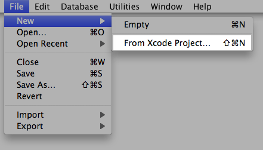

Click File > New > From Xcode Project... to create a new Localization Project from your Xcode project. You will be prompted to select a location and enter a file name for the Localization Manager file. After having saved your file the Localization Manager asks you to specify the Xcode project the resources of which are to be localized.

The localizable resources from your Xcode project will be scanned and added to the file list in the Localization Manager window. You will now see the resources bundle containing all the localizable files from your original Xcode project.
Benefits of creating a Localization Project from Xcode:
When creating your Localization project directly from your Xcode project, you will achieve tight integration that allows you to update your Xcode project with the localized languages directly via the Localization Manager. When exporting the localized resources to your Xcode project, the Localization Manager automatically creates the respective .lproj folders for the languages in the Resources folder of your Xcode project.
Are you looking for a certain topic? Then take a look at the topics list.
Next chapter: Adding languages to the Localization Project